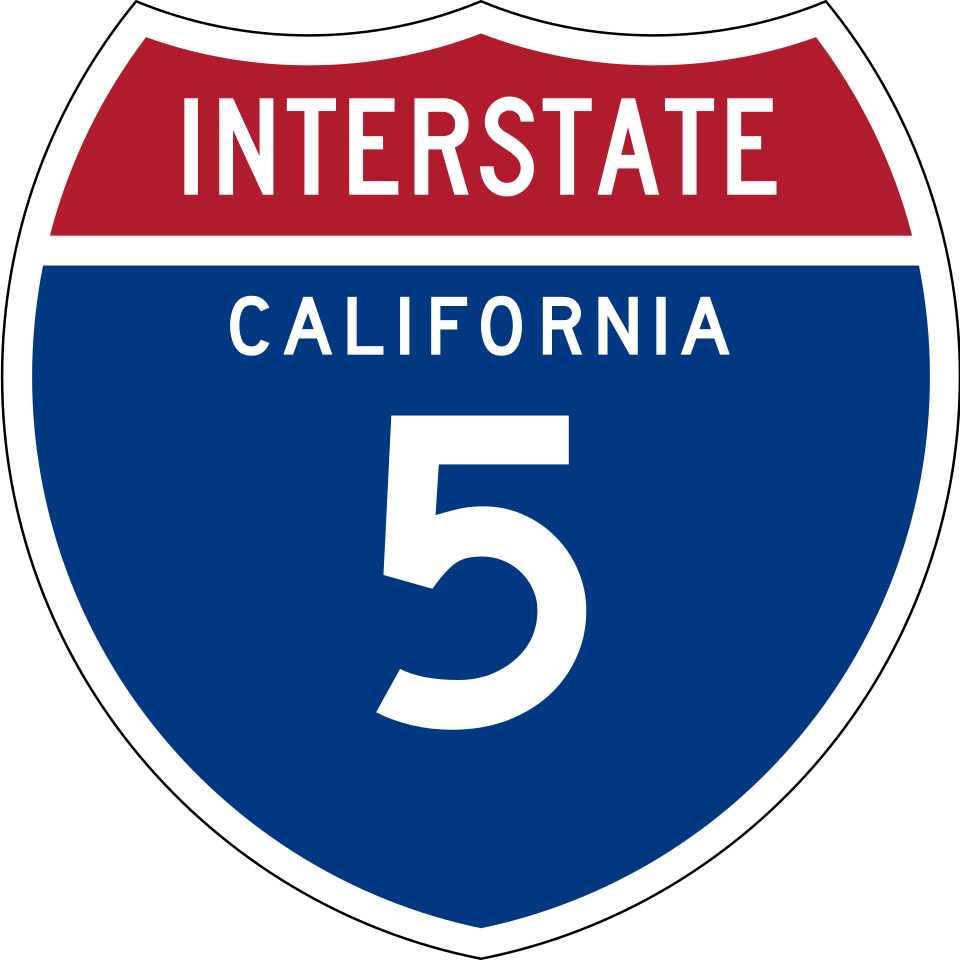

I-5 Live Drive Simulator
!calcup26 · Irvine → Alameda
Preparing live adapter
Section
--
Speed
--
ETA
--
Progress
0%
Last sync
--
Open Glympse
Open Maps
Sync Live Tag
Pause
❯
Controls
First Person
Drone
Overhead
Traffic
Stops
Route Intel
❯
Route
First Person · AR Windshield
I-5 NORTH
NEXT
--
-- MILES
Drone Follow · Telemetry
--
GPS · Bearing
--
Overhead · Route Operations
Irvine → Alameda
Map Surface
Route map
Speed
--
Route mile
--
Next stop
--
Section
--
Traffic
--
Route Intel
Waiting for route position…
Next Stops Ahead
Looking up nearby stops along the route…
Journey Progress
0%
0 / 0 mi